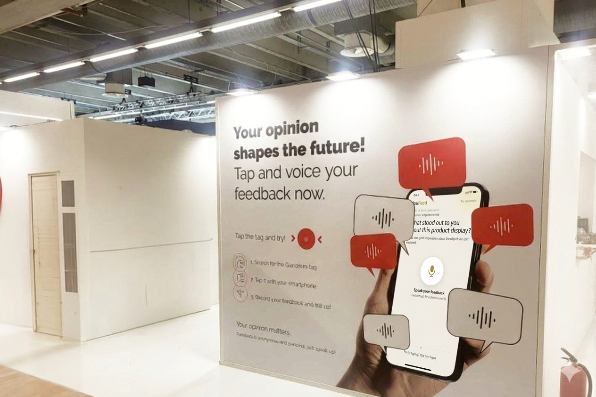
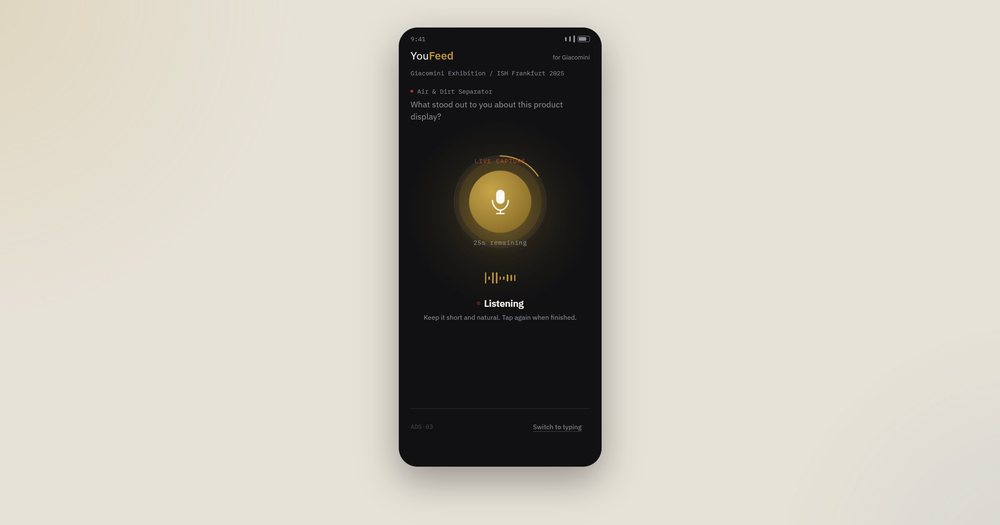
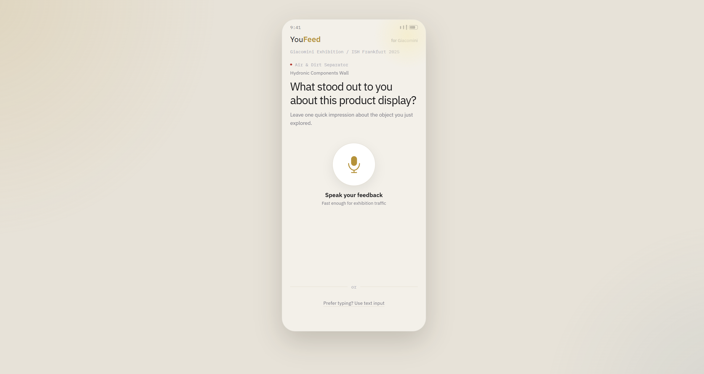
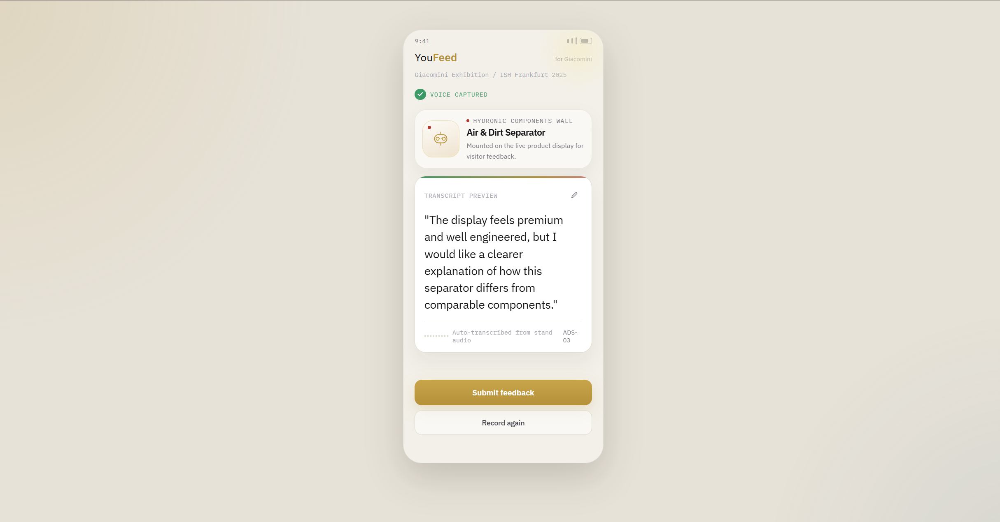
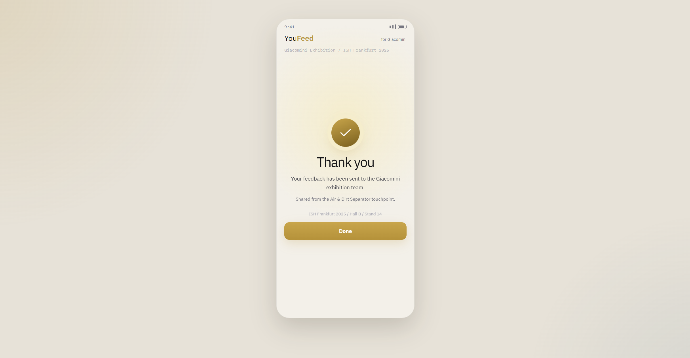

YouFeed
为展会场景重构一个语音优先、低摩擦的即时反馈入口，把线下触点接回可分析的数字反馈链路。
这个项目源于我在 DI Works 的真实展会场景观察。原始概念由两个部分组成：YouFeed 负责前台反馈采集，让参观者通过二维码或 NFC 进入与具体展品绑定的移动页面；InsightGPT 负责后台转写、分析与整理，把零散语音反馈转化为结构化洞察。
我作为实习生聚焦于 YouFeed 的前台移动体验。目标不是做一个更完整的表单，而是把它设计成真正适合展会环境的触点：用户停留时间短、注意力稀缺、上下文强依赖，但仍能快速表达对眼前展品的即时感受。
在 Giacomini 展会试点里，不同 NFC 标签被部署在不同展品或展示区域附近。用户触发后进入的页面必须立即告诉他“你正在评价什么”，同时又不能制造“我需要完成一个任务”的心理负担。
建议放 Giacomini 展台或展品环境照片

建议放标签、立牌或触点说明图

YouFeed
前台触点层。用户通过二维码或 NFC 进入与展品绑定的上下文页面，并通过语音或文字快速留下即时反馈。
InsightGPT
后台洞察层。系统对内容进行转写与分析，帮助团队从高频、碎片化反馈里提炼出可执行洞察。
这个案例不是单独设计一张页面，而是把线下触点、前台交互与后台洞察链路串起来。对作品集来说，这比单纯展示界面更重要，因为它说明了这个设计的成立条件和部署方式。
原则 01 | Context-specific
每个触点对应一个明确对象，让用户几乎不需要再做解释和回忆。
原则 02 | Voice-first
优先鼓励“说一句”，而不是把反馈行为变成长表单填写。
原则 03 | Low-friction
不引入登录、复杂层级或多余步骤，尽可能缩短从触发到表达的路径。
原则 04 | Modular
保证页面结构统一，内容可根据不同展品、区域或活动动态替换。
最终界面围绕“准备说、正在说、已捕捉、已提交”几个关键状态组织，而不是堆叠功能。这样可以把注意力集中在用户真正需要的动作上，让页面在几秒内完成理解、反馈和闭环。
建议放录音状态页，作为整组界面的核心视觉



